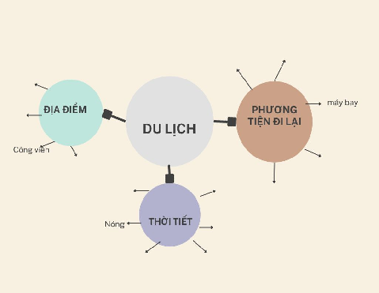

Tune into Bloggers' Podcasts
to Pinpoint Crucial Travel Details
Nghe podcast để tìm thông tin du lịch quan trọng
Imagine you work for a travel agency and need to provide clients with up-to-date travel tips. You will listen to two bloggers' podcasts about Fukuoka and Sapa to find crucial travel details — weather, transport, cultural places and accommodation — then compile and share them with colleagues and clients.
Navigate sections using the left sidebar. Type answers directly into the input fields. Activities marked 💬 are for discussion — write your ideas in the text areas. Use Check Answers for exercises with fixed answers.

| Chủ đề | Từ vựng (ít nhất 10 từ) |
|---|---|
| Thời tiết | |
| Địa điểm | |
| Phương tiện đi lại |
💡 Suggested answers
Thời tiết: nóng, lạnh, mát, mưa, nắng
Địa điểm: nhà thờ, đền chùa, bảo tàng, khu mua sắm
Phương tiện đi lại: xe buýt, tàu hỏa, taxi, tàu điện ngầm
| # | Your list | Person 1 | Person 2 |
|---|---|---|---|
| 1 | |||
| 2 | |||
| 3 |
Imagine you work for a travel agency and need to provide clients with up-to-date travel tips. Your task is to listen to bloggers' podcasts to find crucial travel details like weather, transport, cultural places, and accommodation. Compile and share this information with colleagues and clients to enhance their travel planning and experiences.
| Chủ đề | Podcast 1 | Podcast 2 |
|---|---|---|
| Thời tiết của địa điểm du lịch. | ||
| Món ăn nổi tiếng của địa điểm du lịch. | ||
| Các giấy tờ cần mang theo khi đi du lịch. | ||
| Phương tiện đi lại trong chuyến đi. | ||
| Các thiết bị điện tử nên mang theo. | ||
| Những điều không nên làm ở địa điểm du lịch. | ||
| Mua sắm ở địa điểm du lịch. | ||
| Các địa điểm tham quan. | ||
| Thông tin về an toàn của địa điểm du lịch. | ||
| Thông tin khách sạn ở địa điểm du lịch. |
Click to reveal answer key & scripts
Also available as an H5P activity.
| Thông tin | Podcast 1 |
|---|---|
| Địa điểm | |
| Thời tiết | |
| Phương tiện đi lại | |
| Các điểm tham quan | |
| Ăn uống và chỗ ở | |
| Các lưu ý khác |
| Thông tin | Podcast 2 |
|---|---|
| Địa điểm | |
| Thời tiết | |
| Phương tiện đi lại | |
| Các điểm tham quan | |
| Ăn uống và chỗ ở | |
| Các lưu ý khác |
| Thông tin | Sapa | Fukuoka |
|---|---|---|
| Thời tiết | ||
| Phương tiện đi lại | ||
| Điểm tham quan | ||
| Ăn uống và chỗ ở | ||
| Lưu ý khác |
💡 Suggested answers
Phương tiện đi lại — Fukuoka: Hãng hàng không giá rẻ, giá vé từ 5 triệu đến 10 triệu. Trong thành phố: tàu điện ngầm, xe buýt và taxi. Tàu điện ngầm và xe buýt rẻ, còn taxi thì đắt. Sapa: Từ Hà Nội đi bằng ô tô hoặc tàu hỏa. Thuê xe máy ở Sapa từ 100–150k một ngày.
Địa điểm tham quan — Fukuoka: Đền thờ thần biển và bảo tàng quốc gia Kyushu. Sapa: Nhà thờ cổ ở trung tâm thị trấn, bản Cát Cát của người Dao Đỏ và núi Fansipan.
Ăn uống và chỗ ở — Fukuoka: Mì ramen, trứng cá cay, bánh xếp chiên và lẩu lòng bò. Đặt phòng khách sạn trên Agoda, giá phòng từ 80–150 USD mỗi đêm. Sapa: Cơm lam, thịt lợn quay và khâu nhục. Có khách sạn, khu nghỉ dưỡng và homestay.
Các lưu ý khác — Fukuoka: Mua sắm ở các cửa hàng giảm giá vì có nhiều sản phẩm tốt với giá rẻ. Sapa: Không được tùy tiện chụp hình phụ nữ và trẻ em vì nếu họ biết, họ sẽ ép bạn mua thứ gì đó.
Những is used for a specific group and các is used for a general group.
B: Các món ăn Việt Nam có cay không?
After tất cả (all), các is always used to go with nouns.
It is rude to listeners; instead of “các”, you can use mọi người.
Has several meanings: a conditional meaning, or two actions happening at the same time.
Khi tôi đang đi du lịch ở Châu Âu thì chị ấy làm đám cưới ở Việt Nam.
A is 10 km away from B.
Nhà bạn cách đây bao xa?
Also available as an H5P activity.
💡 Suggested answers
2. Khi đi du lịch dài ngày, tôi hay ăn thử những món ăn phổ biến ở địa phương để có thêm trải nghiệm mới mẻ và độc đáo. Tuy nhiên có một số lần trải nghiệm không được tuyệt vời lắm.
3. Khi đi du lịch ở New York, bạn nên đi tàu điện ngầm hoặc đi bộ để tránh kẹt xe. Hơn thế nữa, đi bộ sẽ giúp bạn khám phá những khu vực thú vị của thành phố.
4. Trước khi đến Việt Nam, món ăn ưa thích của khách du lịch khi đến Việt Nam là phở nhưng sau đó họ sẽ mê các món ăn phổ biến khác như bánh cuốn hay bánh mì.
5. Theo kinh nghiệm cá nhân khi đi du lịch thì thời tiết là một yếu tố quan trọng mà tôi luôn xem xét cẩn thận để lên lịch trình cho chuyến đi.
| Nội dung | Answer |
|---|---|
| a. Đi bộ là một cách trải nghiệm cuộc sống gần gũi nhất, bạn có thể vào bất cứ cửa hàng lưu niệm, tiệm điện tử hay shop thời trang nào bạn thích từ 8 giờ sáng đến tận đêm khuya. | |
| b. Nên tìm hiểu trước về một số câu giao tiếp cơ bản trong tiếng Hàn, có thể bạn tự tin về trình độ tiếng Anh nhưng không phải người Hàn Quốc nào cũng giỏi ngoại ngữ đâu. | |
| c. Trà sữa trân châu là một món ăn vặt được nhiều người trên thế giới ưa thích. Nếu đã đến Đài Loan thì nhất định phải thử ngay một cốc trà sữa đậm vị, không nơi nào sánh bằng. | |
| d. Mùa hè là mùa cao điểm của các chuyến du lịch Châu Âu vì bạn sẽ được tắm biển, phơi nắng, tham quan và tham gia nhiều lễ hội hấp dẫn khác. Một số quốc gia mùa này sẽ có nhiệt độ cao đến 40 độ C nên bạn cần tìm hiểu về thời tiết trước khi đi. | |
| e. Hòn đảo Bali, một vùng đất tuyệt đẹp, nằm ẩn mình giữa quần thể Đông Nam Á. Bali có diện tích khoảng 5.780 km² và được bao quanh bởi Biển Bali ở phía nam, Biển Java ở phía tây và Biển Lombok ở phía đông. (example) | |
| f. Tùy thuộc vào lịch trình cũng như mong muốn chuyến đi của bạn. Nếu đặt phòng trong các khu trung tâm hay các khu vực sầm uất giá phòng sẽ thường cao. Để đặt được phòng giá rẻ bạn nên tìm những khu xa trung tâm, khu đông dân cư và gần trạm MRT để thuận tiện cho việc di chuyển. | |
| g. Muốn đến Đài Loan du lịch thì thị thực là thứ tất yếu phải có bạn nhé! Có 2 loại visa: nhập cảnh một lần và nhập cảnh nhiều lần. Bạn nên lưu ý chi phí khi làm visa Đài Loan là tiền đô nhé. Visa một lần thì khoảng 50 USD, còn visa nhiều lần thì đắt hơn một chút, khoảng 100 USD. | |
| h. Theo kinh nghiệm du lịch Thái Lan tự túc của nhiều người, thì đây là danh sách bạn phải thử: Pad Thai, Tom Yum Goong, Gỏi Som Tam, Kem xoài và Soda dâu. | |
| i. Là thành phố lớn thứ ba Đài Loan, Đài Trung là một trong những thành phố có những điểm đến đẹp độc đáo ở Đài Loan. Với những tòa nhà chọc trời, những ngôi chùa ngay trung tâm thành phố, chợ đêm sống động tạo nên sắc màu riêng của Đài Trung. Đây là sự kết hợp hài hòa giữa nông thôn và thành thị. |
Also available as an H5P activity.
| G | Goal | You are going to compile a US travel bucket list for Vietnamese tourists. |
| R | Role | You are doing an internship at the American Center at the US Embassy in Hanoi. |
| A | Audience | Vietnamese people, young people in particular. |
| S | Situation | You are helping the American Center at the US Embassy in Hanoi to create a US travel bucket list for Vietnamese people to promote tourism between Vietnam and the US. |
| P | Product | A curated list for the American Center, proposing three essential destinations in the US along with detailed travel information. Publish your work on the Exit Task Padlet if you want to share publicly. |
| S | Standard | 1. Provide clear information about 3 places in the table. 2. Explain why you chose these must-go places. 3. Use proper grammar, spelling, and punctuation. 4. Use clear and concise language. |
Reading sources: travel.com.vn — Top điểm đến không nên bỏ qua khi du lịch Mỹ · klook.com — Địa điểm du lịch Mỹ
| Thông tin | Địa điểm số 1 | Địa điểm số 2 | Địa điểm số 3 |
|---|---|---|---|
| Giới thiệu chung (thời tiết, địa lý, điểm nổi bật) | |||
| Phương tiện đi lại | |||
| Hoạt động tham quan | |||
| Ăn uống và chỗ ở | |||
| Các lưu ý khác |
Click 🔊 to hear each word. Flashcards: Quizlet SA · Quizlet NA
Some groups have lived in Vietnam for millennia, while the Hmong have emigrated from China to the south in recent centuries. Each has its own language, customs, clothing, fashion and spiritual beliefs.
Ways of saying currency in spoken language (NA):